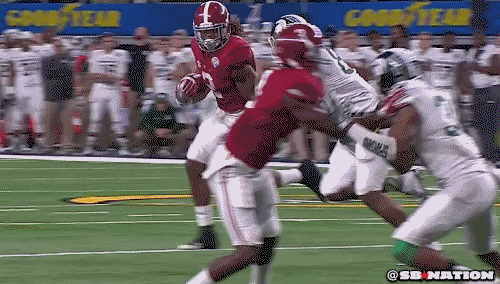

John Rumler |

Gif from sbnation
I've been an avid Michigan State sports fan essentially since birth. I grew up in the Lansing area and had great sports
to watch as the Dantonio era of football redefined Michigan State as a program, and Izzo continued to put out fantastic
products on the basketball court. The point I'm trying to make is that I should really realize that our program will
in truth always be frustrating and up and down. Frankly we aren't a dynasty school in Football and probably never will
be, but after last year I was really starting to get some hope for what the future and product that would be shown to
myself and the new fans that seemingly popped out of nowhere to fill the stadium in our first season back from covid.
So this year really rubbed me the wrong way. I wanted to see improvements in the secondary and an offense that relied
on its proven tools to move the ball with a hopefully better coached and better conditioned O-Line. None of that has
happened. I don't know what the issue has been whether it be coaching or the players not learning the scheme but we
have generally looked lost all over the field. After a narrow win yesterday against a bluntly mediocre Wisconsin team,
I'm just left wondering where the defensive adjustments that were made were earlier in the season. Why we couldn't have
been running a 4-3 man coverage centered scheme rather than a soft zone earlier in the season. Where Payton Thorne was
for our last 4 games. Frankly I've been left with more questions than answers more often than I would like, and I hope
going forward there is major change and we don't continue to have decommitments from an otherwise impressive recruiting
trail. I suppose only time will tell, but right now it just feels very similar to Derrick Henry throwing away my hopes
and dreams for the program on 12/31/2015.